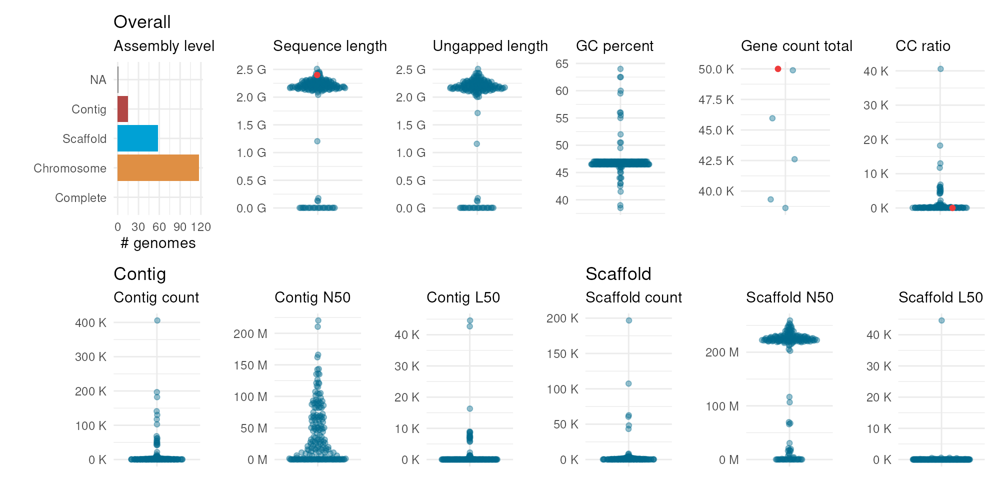
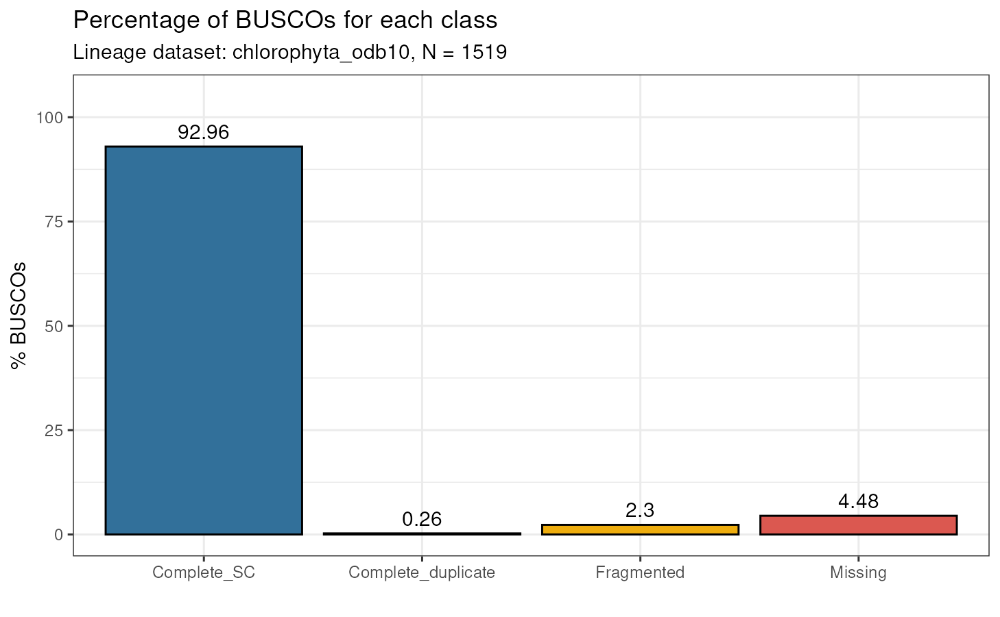
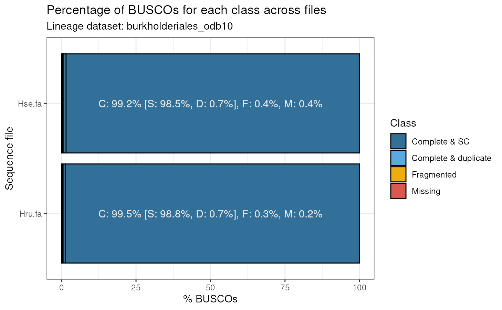

Assessing genome assembly and annotation quality
Fabricio Almeida-Silva
VIB-UGent Center for Plant Systems Biology, Ghent University, Ghent, BelgiumYves Van de Peer
VIB-UGent Center for Plant Systems Biology, Ghent University, Ghent, BelgiumSource:
vignettes/vignette_01_assessing_genome_assembly.Rmd
vignette_01_assessing_genome_assembly.RmdIntroduction
When working on your own genome project or when using publicly
available genomes for comparative analyses, it is critical to assess the
quality of your data. Over the past years, several tools have been
developed and several metrics have been proposed to assess the quality
of a genome assembly and annotation. cogeqc helps users
interpret their genome assembly statistics by comparing them with
statistics on publicly available genomes on the NCBI. Additionally,
cogeqc also provides an interface to BUSCO (Simão et al. 2015), a popular tool to assess
gene space completeness. Graphical functions are available to make
publication-ready plots that summarize the results of quality
control.
Installation
You can install cogeqc from Bioconductor with the
following code:
if(!requireNamespace('BiocManager', quietly = TRUE))
install.packages('BiocManager')
BiocManager::install("cogeqc")Assessing genome assembly quality: statistics in a context
When analyzing and interpreting genome assembly statistics, it is
often useful to place your stats in a context by comparing them with
stats from genomes of closely-related or even the same species.
cogeqc provides users with an interface to the NCBI
Datasets API, which can be used to retrieve summary stats for genomes on
NCBI. In this section, we will guide you on how to retrieve such
information and use it as a reference to interpret your data.
Obtaining assembly statistics for NCBI genomes
To obtain a data frame of summary statistics for NCBI genomes of a
particular taxon, you will use the function
get_genome_stats(). In the taxon parameter, you
must specify the taxon from which data will be extracted. This can be
done either by passing a character scalar with taxon name or by passing
a numeric scalar with NCBI Taxonomy ID. For example, the code below
demonstrates two ways of extracting stats on maize (Zea mays)
genomes on NCBI:
# Example 1: get stats for all maize genomes using taxon name
maize_stats <- get_genome_stats(taxon = "Zea mays")
head(maize_stats)
#> accession source species_taxid species_name species_common_name
#> 1 GCA_902167145.1 GENBANK 4577 Zea mays <NA>
#> 2 GCF_902167145.1 REFSEQ 4577 Zea mays <NA>
#> 3 GCA_022117705.1 GENBANK 4577 Zea mays <NA>
#> 4 GCA_051912235.1 GENBANK 4577 Zea mays <NA>
#> 5 GCA_029775835.1 GENBANK 4577 Zea mays <NA>
#> 6 GCA_965287125.1 GENBANK 4577 Zea mays <NA>
#> species_ecotype species_strain species_isolate species_cultivar
#> 1 <NA> NA <NA> B73
#> 2 <NA> NA <NA> B73
#> 3 <NA> NA <NA> Mo17-2021
#> 4 <NA> NA <NA> LH244
#> 5 <NA> NA <NA> LT2357
#> 6 <NA> NA <NA> <NA>
#> assembly_level assembly_status assembly_name
#> 1 Chromosome current Zm-B73-REFERENCE-NAM-5.0
#> 2 Chromosome current Zm-B73-REFERENCE-NAM-5.0
#> 3 <NA> current Zm-Mo17-REFERENCE-CAU-T2T-assembly
#> 4 Chromosome current ASM5191223v1
#> 5 Chromosome current ASM2977583v1
#> 6 Chromosome current Zm-EA1197-AMZ-1.0
#> assembly_type submission_date
#> 1 haploid NA
#> 2 haploid NA
#> 3 haploid NA
#> 4 haploid NA
#> 5 haploid NA
#> 6 haploid NA
#> submitter
#> 1 MaizeGDB
#> 2 MaizeGDB
#> 3 China Agriculture University
#> 4 China Agriculture University
#> 5 Beijing Lantron Seed Co., LTD.
#> 6 Institut national de recherche pour l'agriculture, l'alimentation et l'environnement
#> sequencing_technology atypical refseq_category
#> 1 PacBio SEQUEL FALSE reference genome
#> 2 PacBio SEQUEL FALSE reference genome
#> 3 Oxford Nanopore PromethION; PacBio FALSE <NA>
#> 4 Oxford Nanopore PromethION; PacBio Sequel FALSE <NA>
#> 5 PacBio Sequel FALSE <NA>
#> 6 Illumina HiSeq 2500 FALSE <NA>
#> chromosome_count sequence_length ungapped_length contig_count contig_N50
#> 1 10 2182075994 2178268108 1393 47037903
#> 2 10 2182075994 2178268108 1393 47037903
#> 3 10 2178604320 2178604320 10 220303002
#> 4 10 2286149880 2286149380 15 210418674
#> 5 10 2106865080 2106637080 460 15883073
#> 6 10 2226752758 2214060529 41618 119671
#> contig_L50 scaffold_count scaffold_N50 scaffold_L50 GC_percent
#> 1 16 685 226353449 5 47.0
#> 2 16 685 226353449 5 47.0
#> 3 5 10 220303002 5 47.0
#> 4 5 10 228666739 5 46.5
#> 5 41 10 222005600 5 47.0
#> 6 5706 10 239478437 5 46.5
#> annotation_provider annotation_release_date gene_count_total
#> 1 <NA> <NA> NA
#> 2 NCBI RefSeq 2025-02-14 49888
#> 3 <NA> <NA> NA
#> 4 <NA> <NA> NA
#> 5 <NA> <NA> NA
#> 6 <NA> <NA> NA
#> gene_count_coding gene_count_noncoding gene_count_pseudogene gene_count_other
#> 1 NA NA NA NA
#> 2 34313 10353 5222 NA
#> 3 NA NA NA NA
#> 4 NA NA NA NA
#> 5 NA NA NA NA
#> 6 NA NA NA NA
#> CC_ratio
#> 1 139.3
#> 2 139.3
#> 3 1.0
#> 4 1.5
#> 5 46.0
#> 6 4161.8
str(maize_stats)
#> 'data.frame': 191 obs. of 36 variables:
#> $ accession : chr "GCA_902167145.1" "GCF_902167145.1" "GCA_022117705.1" "GCA_051912235.1" ...
#> $ source : chr "GENBANK" "REFSEQ" "GENBANK" "GENBANK" ...
#> $ species_taxid : int 4577 4577 4577 4577 4577 4577 4577 4577 4577 4577 ...
#> $ species_name : chr "Zea mays" "Zea mays" "Zea mays" "Zea mays" ...
#> $ species_common_name : chr NA NA NA NA ...
#> $ species_ecotype : chr NA NA NA NA ...
#> $ species_strain : logi NA NA NA NA NA NA ...
#> $ species_isolate : chr NA NA NA NA ...
#> $ species_cultivar : chr "B73" "B73" "Mo17-2021" "LH244" ...
#> $ assembly_level : Factor w/ 4 levels "Complete","Chromosome",..: 2 2 NA 2 2 2 2 2 2 2 ...
#> $ assembly_status : chr "current" "current" "current" "current" ...
#> $ assembly_name : chr "Zm-B73-REFERENCE-NAM-5.0" "Zm-B73-REFERENCE-NAM-5.0" "Zm-Mo17-REFERENCE-CAU-T2T-assembly" "ASM5191223v1" ...
#> $ assembly_type : chr "haploid" "haploid" "haploid" "haploid" ...
#> $ submission_date : logi NA NA NA NA NA NA ...
#> $ submitter : chr "MaizeGDB" "MaizeGDB" "China Agriculture University" "China Agriculture University" ...
#> $ sequencing_technology : chr "PacBio SEQUEL" "PacBio SEQUEL" "Oxford Nanopore PromethION; PacBio" "Oxford Nanopore PromethION; PacBio Sequel" ...
#> $ atypical : logi FALSE FALSE FALSE FALSE FALSE FALSE ...
#> $ refseq_category : chr "reference genome" "reference genome" NA NA ...
#> $ chromosome_count : int 10 10 10 10 10 10 10 10 10 10 ...
#> $ sequence_length : num 2.18e+09 2.18e+09 2.18e+09 2.29e+09 2.11e+09 ...
#> $ ungapped_length : num 2.18e+09 2.18e+09 2.18e+09 2.29e+09 2.11e+09 ...
#> $ contig_count : int 1393 1393 10 15 460 41618 43866 50241 49556 47620 ...
#> $ contig_N50 : int 47037903 47037903 220303002 210418674 15883073 119671 106563 95612 93708 92391 ...
#> $ contig_L50 : int 16 16 5 5 41 5706 6261 7033 7057 6712 ...
#> $ scaffold_count : int 685 685 10 10 10 10 10 10 10 10 ...
#> $ scaffold_N50 : int 226353449 226353449 220303002 228666739 222005600 239478437 231459016 234294940 230804033 218589869 ...
#> $ scaffold_L50 : int 5 5 5 5 5 5 5 5 5 5 ...
#> $ GC_percent : num 47 47 47 46.5 47 46.5 47 47 47 47 ...
#> $ annotation_provider : chr NA "NCBI RefSeq" NA NA ...
#> $ annotation_release_date: chr NA "2025-02-14" NA NA ...
#> $ gene_count_total : int NA 49888 NA NA NA NA NA NA NA NA ...
#> $ gene_count_coding : int NA 34313 NA NA NA NA NA NA NA NA ...
#> $ gene_count_noncoding : int NA 10353 NA NA NA NA NA NA NA NA ...
#> $ gene_count_pseudogene : int NA 5222 NA NA NA NA NA NA NA NA ...
#> $ gene_count_other : int NA NA NA NA NA NA NA NA NA NA ...
#> $ CC_ratio : num 139.3 139.3 1 1.5 46 ...
# Example 2: get stats for all maize genomes using NCBI Taxonomy ID
maize_stats2 <- get_genome_stats(taxon = 4577)
# Checking if objects are the same
identical(maize_stats, maize_stats2)
#> [1] TRUEAs you can see, there are 191 maize genomes on the NCBI. You can also include filters in your searches by passing a list of key-value pairs with keys in list names and values in elements. For instance, to obtain only chromosome-scale and annotated maize genomes, you would run:
# Get chromosome-scale maize genomes with annotation
## Create list of filters
filt <- list(
filters.has_annotation = "true",
filters.assembly_level = "chromosome"
)
filt
#> $filters.has_annotation
#> [1] "true"
#>
#> $filters.assembly_level
#> [1] "chromosome"
## Obtain data
filtered_maize_genomes <- get_genome_stats(taxon = "Zea mays", filters = filt)
dim(filtered_maize_genomes)
#> [1] 5 36For a full list of filtering parameters and possible arguments, see the API documentation.
Comparing custom stats with NCBI stats
Now, suppose you sequenced a genome, obtained assembly and annotation stats, and want to compare them to NCBI genomes to identify potential issues. Examples of situations you may encounter include:
The genome you assembled is huge and you think there might be a problem with your assembly.
Your gene annotation pipeline predicted n genes, but you are not sure if this number is reasonable compared to other assemblies of the same species or closely-related species.
To compare user-defined summary stats with NCBI stats, you will use
the function compare_genome_stats(). This function will
include the values you observed for each statistic into a distribution
(based on NCBI stats) and return the percentile and rank of your
observed values in each distribution.
As an example, let’s go back to our maize stats we obtained in the previous section. Suppose you sequenced a new maize genome and observed the following values:
- Genome size = 2.4 Gb
- Number of genes = 50,000
- CC ratio = 2 1
To compare your observed values with those for publicly available
maize genomes, you need to store them in a data frame. The column
accession is mandatory, and any other column will be
matched against columns in the data frame obtained with
get_genome_stats(). Thus, make sure column names in your
data frame match column names in the reference data frame. Then, you can
compare both data frames as below:
# Check column names in the data frame of stats for maize genomes on the NCBI
names(maize_stats)
#> [1] "accession" "source"
#> [3] "species_taxid" "species_name"
#> [5] "species_common_name" "species_ecotype"
#> [7] "species_strain" "species_isolate"
#> [9] "species_cultivar" "assembly_level"
#> [11] "assembly_status" "assembly_name"
#> [13] "assembly_type" "submission_date"
#> [15] "submitter" "sequencing_technology"
#> [17] "atypical" "refseq_category"
#> [19] "chromosome_count" "sequence_length"
#> [21] "ungapped_length" "contig_count"
#> [23] "contig_N50" "contig_L50"
#> [25] "scaffold_count" "scaffold_N50"
#> [27] "scaffold_L50" "GC_percent"
#> [29] "annotation_provider" "annotation_release_date"
#> [31] "gene_count_total" "gene_count_coding"
#> [33] "gene_count_noncoding" "gene_count_pseudogene"
#> [35] "gene_count_other" "CC_ratio"
# Create a simulated data frame of stats for a maize genome
my_stats <- data.frame(
accession = "my_lovely_maize",
sequence_length = 2.4 * 1e9,
gene_count_total = 50000,
CC_ratio = 2
)
# Compare stats
compare_genome_stats(ncbi_stats = maize_stats, user_stats = my_stats)
#> accession variable percentile rank
#> 1 my_lovely_maize sequence_length 0.96875000 7
#> 2 my_lovely_maize gene_count_total 1.00000000 1
#> 3 my_lovely_maize CC_ratio 0.02521008 3Visualizing summary assembly statistics
To have a visual representation of the summary stats obtained with
get_genome_stats(), you will use the function
plot_genome_stats().
# Summarize genome stats in a plot
plot_genome_stats(ncbi_stats = maize_stats)Finally, you can pass your data frame of observed stats to highlight your values (as red points) in the distributions.
plot_genome_stats(ncbi_stats = maize_stats, user_stats = my_stats)
Assessing gene space completeness with BUSCO
One of the most common metrics to assess gene space completeness is
BUSCO (best universal single-copy orthologs) (Simão et al. 2015). cogeqc allows
users to run BUSCO from an R session and visualize results graphically.
BUSCO summary statistics will help you assess which assemblies have high
quality based on the percentage of complete BUSCOs.
Running BUSCO
To run BUSCO from R, you will use the function
run_busco()2. Here, we will use an example FASTA file
containing the first 1,000 lines of the Herbaspirilllum seropedicae
SmR1 genome (GCA_000143225), which was downloaded from Ensembl
Bacteria. We will run BUSCO using burkholderiales_odb10 as the
lineage dataset. To view all available datasets, run
list_busco_datasets().
# Path to FASTA file
sequence <- system.file("extdata", "Hse_subset.fa", package = "cogeqc")
# Path to directory where BUSCO datasets will be stored
download_path <- paste0(tempdir(), "/datasets")
# Run BUSCO if it is installed
if(busco_is_installed()) {
run_busco(sequence, outlabel = "Hse", mode = "genome",
lineage = "burkholderiales_odb10",
outpath = tempdir(), download_path = download_path)
}The output will be stored in the directory specified in
outpath. You can read and parse BUSCO’s output with the
function read_busco(). For example, let’s read the output
of a BUSCO run using the genome of the green algae Ostreococcus
tauri. The output directory is /extdata.
# Path to output directory
output_dir <- system.file("extdata", package = "cogeqc")
busco_summary <- read_busco(output_dir)
busco_summary
#> Class Frequency Lineage
#> 1 Complete_SC 1412 chlorophyta_odb10
#> 2 Complete_duplicate 4 chlorophyta_odb10
#> 3 Fragmented 35 chlorophyta_odb10
#> 4 Missing 68 chlorophyta_odb10This is an example output for a BUSCO run with a single FASTA file.
You can also specify a directory containing multiple FASTA files in the
sequence argument of run_busco(). This way, BUSCO
will be run in batch mode. Let’s see what the output of BUSCO in batch
mode looks like:
data(batch_summary)
batch_summary
#> Class Frequency Lineage File
#> 1 Complete_SC 98.5 burkholderiales_odb10 Hse.fa
#> 2 Complete_SC 98.8 burkholderiales_odb10 Hru.fa
#> 3 Complete_duplicate 0.7 burkholderiales_odb10 Hse.fa
#> 4 Complete_duplicate 0.7 burkholderiales_odb10 Hru.fa
#> 5 Fragmented 0.4 burkholderiales_odb10 Hse.fa
#> 6 Fragmented 0.3 burkholderiales_odb10 Hru.fa
#> 7 Missing 0.4 burkholderiales_odb10 Hse.fa
#> 8 Missing 0.2 burkholderiales_odb10 Hru.faThe only difference between this data frame and the previous one is
the column File, which contains information on the
FASTA file. The example dataset batch_summary contains the
output of run_busco() using a directory containing two
genomes (Herbaspirillum seropedicae SmR1 and Herbaspirillum
rubrisubalbicans M1) as parameter to the sequence
argument.
Visualizing BUSCO summary statistics
After using run_busco() and parsing its output with
read_busco(), users can visualize summary statistics with
plot_busco().
# Single FASTA file - Ostreococcus tauri
plot_busco(busco_summary)
# Batch mode - Herbaspirillum seropedicae and H. rubrisubalbicans
plot_busco(batch_summary)
We usually consider genomes with >90% of complete BUSCOs as having high quality. Thus, we can conclude that the three genomes analyzed here are high-quality genomes.
Session information
This document was created under the following conditions:
sessioninfo::session_info()
#> ─ Session info ───────────────────────────────────────────────────────────────
#> setting value
#> version R Under development (unstable) (2026-03-01 r89508)
#> os Ubuntu 24.04.4 LTS
#> system x86_64, linux-gnu
#> ui X11
#> language en
#> collate en_US.UTF-8
#> ctype en_US.UTF-8
#> tz UTC
#> date 2026-03-05
#> pandoc 3.9 @ /usr/bin/ (via rmarkdown)
#> quarto 1.8.27 @ /usr/local/bin/quarto
#>
#> ─ Packages ───────────────────────────────────────────────────────────────────
#> package * version date (UTC) lib source
#> ape 5.8-1 2024-12-16 [1] CRAN (R 4.6.0)
#> aplot 0.2.9 2025-09-12 [1] CRAN (R 4.6.0)
#> beeswarm 0.4.0 2021-06-01 [1] CRAN (R 4.6.0)
#> BiocGenerics 0.57.0 2025-10-30 [1] Bioconductor 3.23 (R 4.6.0)
#> BiocManager 1.30.27 2025-11-14 [1] CRAN (R 4.6.0)
#> BiocStyle * 2.39.0 2025-10-30 [1] Bioconductor 3.23 (R 4.6.0)
#> Biostrings 2.79.4 2026-01-07 [1] Bioconductor 3.23 (R 4.6.0)
#> bookdown 0.46 2025-12-05 [1] CRAN (R 4.6.0)
#> bslib 0.10.0 2026-01-26 [2] CRAN (R 4.6.0)
#> cachem 1.1.0 2024-05-16 [2] CRAN (R 4.6.0)
#> cli 3.6.5 2025-04-23 [2] CRAN (R 4.6.0)
#> cogeqc * 1.15.1 2026-03-05 [1] Bioconductor
#> crayon 1.5.3 2024-06-20 [2] CRAN (R 4.6.0)
#> desc 1.4.3 2023-12-10 [2] CRAN (R 4.6.0)
#> digest 0.6.39 2025-11-19 [2] CRAN (R 4.6.0)
#> dplyr 1.2.0 2026-02-03 [1] CRAN (R 4.6.0)
#> evaluate 1.0.5 2025-08-27 [2] CRAN (R 4.6.0)
#> farver 2.1.2 2024-05-13 [1] CRAN (R 4.6.0)
#> fastmap 1.2.0 2024-05-15 [2] CRAN (R 4.6.0)
#> fontBitstreamVera 0.1.1 2017-02-01 [1] CRAN (R 4.6.0)
#> fontLiberation 0.1.0 2016-10-15 [1] CRAN (R 4.6.0)
#> fontquiver 0.2.1 2017-02-01 [1] CRAN (R 4.6.0)
#> fs 1.6.6 2025-04-12 [2] CRAN (R 4.6.0)
#> gdtools 0.5.0 2026-02-09 [1] CRAN (R 4.6.0)
#> generics 0.1.4 2025-05-09 [1] CRAN (R 4.6.0)
#> ggbeeswarm 0.7.3 2025-11-29 [1] CRAN (R 4.6.0)
#> ggfun 0.2.0 2025-07-15 [1] CRAN (R 4.6.0)
#> ggiraph 0.9.6 2026-02-21 [1] CRAN (R 4.6.0)
#> ggplot2 4.0.2 2026-02-03 [1] CRAN (R 4.6.0)
#> ggplotify 0.1.3 2025-09-20 [1] CRAN (R 4.6.0)
#> ggtree 4.1.1 2025-10-30 [1] Bioconductor 3.23 (R 4.6.0)
#> glue 1.8.0 2024-09-30 [2] CRAN (R 4.6.0)
#> gridGraphics 0.5-1 2020-12-13 [1] CRAN (R 4.6.0)
#> gtable 0.3.6 2024-10-25 [1] CRAN (R 4.6.0)
#> htmltools 0.5.9 2025-12-04 [2] CRAN (R 4.6.0)
#> htmlwidgets 1.6.4 2023-12-06 [2] CRAN (R 4.6.0)
#> igraph 2.2.2 2026-02-12 [1] CRAN (R 4.6.0)
#> IRanges 2.45.0 2025-10-31 [1] Bioconductor 3.23 (R 4.6.0)
#> jquerylib 0.1.4 2021-04-26 [2] CRAN (R 4.6.0)
#> jsonlite 2.0.0 2025-03-27 [2] CRAN (R 4.6.0)
#> knitr 1.51 2025-12-20 [2] CRAN (R 4.6.0)
#> labeling 0.4.3 2023-08-29 [1] CRAN (R 4.6.0)
#> lattice 0.22-9 2026-02-09 [3] CRAN (R 4.6.0)
#> lazyeval 0.2.2 2019-03-15 [1] CRAN (R 4.6.0)
#> lifecycle 1.0.5 2026-01-08 [2] CRAN (R 4.6.0)
#> magrittr 2.0.4 2025-09-12 [2] CRAN (R 4.6.0)
#> MASS 7.3-65 2025-02-28 [3] CRAN (R 4.6.0)
#> nlme 3.1-168 2025-03-31 [3] CRAN (R 4.6.0)
#> otel 0.2.0 2025-08-29 [2] CRAN (R 4.6.0)
#> patchwork 1.3.2 2025-08-25 [1] CRAN (R 4.6.0)
#> pillar 1.11.1 2025-09-17 [2] CRAN (R 4.6.0)
#> pkgconfig 2.0.3 2019-09-22 [2] CRAN (R 4.6.0)
#> pkgdown 2.2.0 2025-11-06 [1] CRAN (R 4.6.0)
#> plyr 1.8.9 2023-10-02 [1] CRAN (R 4.6.0)
#> purrr 1.2.1 2026-01-09 [2] CRAN (R 4.6.0)
#> R6 2.6.1 2025-02-15 [2] CRAN (R 4.6.0)
#> ragg 1.5.0 2025-09-02 [2] CRAN (R 4.6.0)
#> rappdirs 0.3.4 2026-01-17 [2] CRAN (R 4.6.0)
#> RColorBrewer 1.1-3 2022-04-03 [1] CRAN (R 4.6.0)
#> Rcpp 1.1.1 2026-01-10 [2] CRAN (R 4.6.0)
#> reshape2 1.4.5 2025-11-12 [1] CRAN (R 4.6.0)
#> rlang 1.1.7 2026-01-09 [2] CRAN (R 4.6.0)
#> rmarkdown 2.30 2025-09-28 [1] CRAN (R 4.6.0)
#> S4Vectors 0.49.0 2025-10-30 [1] Bioconductor 3.23 (R 4.6.0)
#> S7 0.2.1 2025-11-14 [1] CRAN (R 4.6.0)
#> sass 0.4.10 2025-04-11 [2] CRAN (R 4.6.0)
#> scales 1.4.0 2025-04-24 [1] CRAN (R 4.6.0)
#> Seqinfo 1.1.0 2025-10-31 [1] Bioconductor 3.23 (R 4.6.0)
#> sessioninfo 1.2.3 2025-02-05 [2] CRAN (R 4.6.0)
#> stringi 1.8.7 2025-03-27 [2] CRAN (R 4.6.0)
#> stringr 1.6.0 2025-11-04 [2] CRAN (R 4.6.0)
#> systemfonts 1.3.1 2025-10-01 [2] CRAN (R 4.6.0)
#> textshaping 1.0.4 2025-10-10 [2] CRAN (R 4.6.0)
#> tibble 3.3.1 2026-01-11 [2] CRAN (R 4.6.0)
#> tidyr 1.3.2 2025-12-19 [1] CRAN (R 4.6.0)
#> tidyselect 1.2.1 2024-03-11 [1] CRAN (R 4.6.0)
#> tidytree 0.4.7 2026-01-08 [1] CRAN (R 4.6.0)
#> treeio 1.35.0 2025-10-30 [1] Bioconductor 3.23 (R 4.6.0)
#> vctrs 0.7.1 2026-01-23 [2] CRAN (R 4.6.0)
#> vipor 0.4.7 2023-12-18 [1] CRAN (R 4.6.0)
#> withr 3.0.2 2024-10-28 [2] CRAN (R 4.6.0)
#> xfun 0.56 2026-01-18 [2] CRAN (R 4.6.0)
#> XVector 0.51.0 2025-10-31 [1] Bioconductor 3.23 (R 4.6.0)
#> yaml 2.3.12 2025-12-10 [2] CRAN (R 4.6.0)
#> yulab.utils 0.2.4 2026-02-02 [1] CRAN (R 4.6.0)
#>
#> [1] /__w/_temp/Library
#> [2] /usr/local/lib/R/site-library
#> [3] /usr/local/lib/R/library
#> * ── Packages attached to the search path.
#>
#> ──────────────────────────────────────────────────────────────────────────────